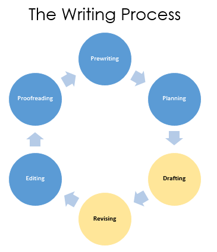

Reading • No submission required

The Drafting and Revising stages of the Writing Process are the ones most directly connected to the Content and Organization criteria on the Grading Rubric.
Drafting is where you combine your Prewriting work with your Planning work (your research essay outline) and write a full first draft. Think of it as getting your ideas onto the page — it doesn’t need to be perfect.
Revising is where you revisit the draft with fresh eyes and improve the content (what you’re saying) and organization (how it flows). For a research essay, revising also means checking that your sources are genuinely integrated into your argument, not just inserted.
Note: Drafting and Revising are separate stages for a reason. Writers who try to perfect every sentence while drafting often get stuck. Draft first, revise later.
Goal: Produce a complete first draft by translating your outline into full sentences and paragraphs.
Goal: Improve content and organization. This is not the same as proofreading (fixing grammar/spelling). That comes later.
You are not required to submit a rough draft, but you are encouraged to email one to me at any time. You’ll receive comments and suggestions within 24 hours. Email your draft as a .doc or .docx file so comments can be typed directly into the document. The emphasis of feedback will be on content, organization, and MLA documentation. While I will make you aware of any serious pattern of sentence or grammar errors, I cannot edit or proofread the essay for you.
The good news: the structure you used in your Literary Analysis Essay still applies here. The same introduction, T-E-A-L body paragraphs, and conclusion format carries over. What’s new is that each body paragraph now needs to coordinate two voices: your primary source (the short story or film) and your secondary sources (the scholarly articles you found in the databases).
One of the most common mistakes in a first research essay is treating secondary sources as a separate layer: writing the essay you already know how to write and then trying to “add research” on top of it afterward. The better approach is to weave sources into your argument as you draft each paragraph. Here’s a reliable method:
Write your topic sentence: State the paragraph’s analytical point and how it supports your thesis.
Introduce and quote from your primary source (the story or film). Next, write your analysis: What does this quote reveal? This is the core of the paragraph, exactly as in Essay One.
Ask: where would a scholarly perspective deepen this point? Look back at your secondary sources. Is there a quote or idea from one of your articles that supports, complicates, or extends your analysis? Introduce it, quote or paraphrase it, and add an in-text citation.
Analyze the secondary source: Explain what it adds to your argument. Your analysis should always follow a secondary source quote. Don’t let a scholarly quote be the last word in the paragraph.
Close with a link sentence that connects back to your thesis or bridges to the next paragraph. If you’re adding a second primary source quote and additional secondary source quote to the paragraph, repeat Steps 2–4 before this closing sentence.
A lawyer calls witnesses to the stand to support his or her argument, but the lawyer still controls the argument being made to the jury or judge. Think of your secondary sources the same way: you’re calling scholarly voices in to back up a point you’ve already made. You’re in charge; they’re the supporting evidence.
One of the most common problems in a first research essay is over-reliance on secondary sources. This happens when students quote so heavily from their scholarly articles that the essay reads like a summary of what the critics think rather than an argument of the student’s own making. Your secondary sources are there to support your ideas, not replace them. This is why there is a required limit on how many times you can cite your three research sources: six total times over the course of the essay: four direct quotes, two paraphrases.
Topic sentence. [Quote from Article 1.] Brief comment. [Quote from Article 2.] Brief comment. [Quote from Article 3.] Link sentence.
The paragraph is driven by the critics. The primary source barely appears. The student’s own analysis is minimal.
Topic sentence. [Primary quote + student analysis.] [Secondary source quote + student analysis.] [Primary quote + student analysis.] Link sentence.
The student’s analysis drives the paragraph. The scholarly source deepens one of the analytical points without taking over.
After writing each body paragraph, count your sentences. How many are your own analysis versus how many are quotes and paraphrases from sources? If the sources are outweighing your own voice, revise the paragraph to lead with your ideas and use sources to support them.
Retelling what happened is not analysis. Focus on why things happen and what they mean. Your secondary sources should be supporting your interpretation, not helping you describe events.
Every quote, whether from the story or a scholarly article, must be introduced with a signal phrase and followed by your analysis. Never let a quote land in the paragraph without explanation on both sides.
If your paragraphs primarily explain what your scholarly articles argue rather than analyzing the story, the essay becomes a report on criticism rather than your own argument. Secondary sources support your argument: they don’t replace it.
A conclusion that just repeats the introduction adds nothing. End with a broader insight, something your analysis has actually proven about the human condition or the story’s lasting significance.
Many students write the entire draft and then try to reconstruct which source said what. Keep a running Works Cited draft open alongside your essay as you write. Every time you use a source, confirm its entry before you move on.
Use this checklist when reviewing your complete first draft. Revising means reading at the content and organization level, not sentence by sentence. Save the sentence-level work for the Editing and Proofreading stages.